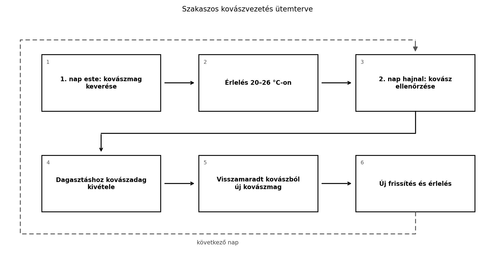
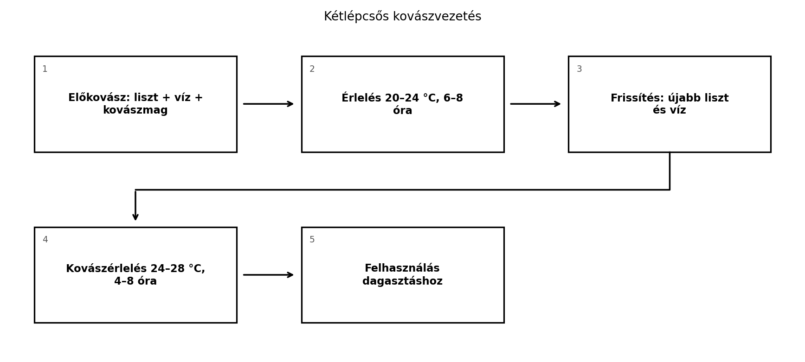

Hétfő hajnalban a pék megnyitja a kovászérlelő ajtaját. Az előző nap vezetett kovász érett, illata kissé savanykás, gyümölcsös, térfogata nőtt. Kiveszi belőle a dagasztáshoz szükséges mennyiséget, de vajon mi lesz a maradékkal? Ha mindet felhasználja, másnap nincs érett kovásza. Ha egyszerűen beteszi a hűtőbe, meddig tartható el, és hogyan kell frissíteni? A szakaszos és folyamatos kovászkészítés arra ad választ, hogyan szervezzük meg a kovász „életét”, hogy minden műszakban megfelelő mennyiségű, érett, stabil tulajdonságú kovász álljon rendelkezésre, túlsavanyodás és mikroflóra-romlás nélkül.
A szakaszos kovászvezetést egy többnapos láncként képzeld el: esténként a megmaradt érett kovászból kevés magot félretesznek, másnap ezt frissítik liszttel és vízzel, hagyják érni, majd a dagasztásnál felhasználják és ismét magot tartanak vissza. A folyamatos kovászkészítés ezzel szemben egy áramló folyamat, ahol a kovásztartályból szinte minden dagasztáskor megfelelő adag távozik, a rendszer pedig friss liszttel és vízzel folyamatosan kéri a következő adagot.

A lépésekből két dolog látszik: mindig tudni kell, mekkora részt viszünk a dagasztásba, és mekkora mag marad a következő érleléshez. Ha a mag túl kevés, a következő kovász lassan érik; ha túl sok, fölösleg keletkezik, vagy a kovász hőmérséklete és savassága megugorhat.
Definíció. A szakaszos kovászvezetés olyan eljárás, amelyben a kovász kisebb, meghatározott adagokban, egymástól időben elkülönülő tételekben készül és érik. A tétel felhasználása után a maradékból — vagy külön félretett magból — új felfrissítéssel indítják a következő kovászt.
A szakaszos vezetés legfontosabb mutatói:
Definíció. A folyamatos kovászkészítés olyan üzemeltetési mód, amelyben a kovász egy tartályban vagy vezetékes rendszerben folyamatosan áll rendelkezésre, és a tésztakészítés ütemében folyamatosan adagolják belőle a szükséges mennyiséget. A rendszerbe friss liszt és víz, valamint esetleg élesztő vagy más starter adagolása történik, így a kovász kora és tulajdonságai egyensúlyi állapotban tarthatók.
A folyamatos rendszer előnye a kiegyenlített kovászminőség, a hátránya, hogy a berendezés csak akkor dolgozik jól, ha a kiadagolt mennyiség és a frissítés aránya stabil. Továbbvitt eredmény. A kovásznagyságot, a kovász TA-t és a felfrissítési arányt a Kovászszámítások és a kovász dokumentálása alfejezetben vesszük elő számítási feladatokkal.
Definíció. Kovászmag az érett kovász azon része, amelyet nem használnak fel a dagasztáshoz, hanem félretesznek a következő kovász elindításához. A kovászmag tehát nem külön receptúra, hanem hordozó: benne élnek a kovász mikroorganizmusai, és benne maradnak a jellegzetes savak, enzimek és aromaanyagok.
A kovászmag nagysága a következő frissítés során meghatározza az oltási arányt. Kis maggal (például a kovászliszt 10–20%-a maglisztben kifejezve) hosszabb, kontrolláltabb érés várható; nagy maggal (például 50–80%) gyorsabb érés, de nagyobb a túlérés veszélye.
Definíció. A starterkultúra olyan, szelekcióval fenntartott mikroorganizmus-készítmény, amelyet a kovász elindítására vagy rendszeres frissítésekor alkalmaznak. A sütőiparban jellemzően tejsavbaktérium-törzseket és kisebb arányban élesztőt tartalmazó, lisztben vagy folyékony közegben szuszpendált készítményt használnak, a gyártó leírása szerint.
A starterkultúra indítási előnye, hogy a kovász mikroflórája gyorsan a kívánatos irányba terelhető, a termék íze, savaránya kiszámíthatóbb. Hátránya, hogy a starterkultúra nem pótolja a higiénikus, állandó hőmérsékletű vezetést: ha a körülmények rosszak, a starter is legyengül.
Definíció. Az élesztőaktiválás az a rövid előkészítő lépés, amikor a sütőélesztőt langyos közegben, gyakran kis mennyiségű vízzel, esetleg kevés liszttel vagy cukorral keverik el, és rövid ideig állni hagyják, hogy az élesztősejtek anyagcseréje meginduljon, mielőtt a kovászba vagy tésztába kevernék.
Fontos: az aktiválás nem helyettesíti a kovász érlelését. Az aktiválás célja az élesztő „beindítása”, a kovászé a savanyító mikroflóra felszaporítása és az ízanyagok kialakítása.
Egylépcsős a vezetés, ha a kovászt egyetlen műveletben, egyforma paraméterekkel keverik és érlelik, majd felhasználják. Ez a legegyszerűbb, kisüzemi és tanpékségi gyakorlatban jellemző.
Gyakorlat. Egylépcsős búzakovász:
A fenti mennyiségek tanulási példák, nem az egyedüli helyes értékek.
A kétlépcsős vezetésnél először egy kisebb, hígabb vagy szilárdabb előkovászt készítenek, majd ezt felfrissítik a kovász teljes mennyiségére.

Kétlépcsős a vezetés tipikusan akkor előnyös, ha a kovász erősebb, karakteresebb savasságot kell adjon, vagy ha a kovászliszt arány nagy, de nem akarnak túl hosszú egyetlen érési időt. Az első lépcsőben a mikroflóra felszaporodik, a másodikban a kovász készre érik és friss nyersanyagot kap.
Többlépcsős vezetésnél három vagy több felfrissítés van, jellemzően rozskovászos vagy más erjedéses kovász kultúránál. A lépcsők célja a savösszetétel fokozatos alakítása: kezdetben inkább ecetsavas, később inkább tejsavas irányba terelhető az érés. A többlépcsős vezetés kényesebb: minden lépcsőnél ellenőrizni kell a hőmérsékletet, az illatot és a pH- vagy savfokot, ha a technológia előírja.
A folyamatos kovászkészítés nagyüzemi környezetben jellemző, ahol a kovász felhasználása egyenletes. A kovász tárolására szigetelt, esetleg hűthető tartály szolgál, amelyből a felhasználás előtt adagolják a kovászt. A tartályba friss lisztet, vizet és gyakran kis mennyiségű élesztőt vagy startert adagolnak. A rendszer akkor működik stabilan, ha a felhasználási sebesség nagyobb, mint a romlási vagy túlérési sebesség, és ha a tartályban a kovász térfogata nem ingadozik túlságosan.
A folyamatos rendszerben is szükséges: - a felhasznált kovász mennyiségének folyamatos mérése, - a frissítéshez szükséges liszt és víz arányainak rögzítése, - a hőmérséklet figyelése, - időszakos teljes ürítés és alapos tisztítás, mert a tartály falán letapadt kovász erjedési és higiéniai problémát okozhat.
A kovászmag akkor marad életképes, ha: - elegendő savassága és nedvessége van, - hűvös helyen, fedve tárolják, - nem szárad ki, - nem érintkezik tisztítószerrel, idegen anyaggal, - rendszeresen frissítik.
A magvezetés tipikus hibája a „feléheztetett” mag: ha túl sokáig hűtőben tartják felfrissítés nélkül, a tejsavbaktériumok és élesztők legyengülnek, a kovász következő érése lassú, a tészta redukált gázosságú lesz. Ilyenkor a magot fokozatosan kell „feléleszteni”: első frissítéshez több mag, kisebb hőmérsékleti különbség, hosszabb érési idő tartozik.
A kovászt hűtve tárolni a gyakorlatban két céllal lehet: - a folyamat megszakítása, ha a termelési ütem változik, - a kovászmag megőrzése a következő műszakig.
A hűtés nem állítja meg teljesen az erjedést, csak lelassítja. A kovász hűtőben, jellemzően 2–6 °C-on tárolható tanulási példaként 24–72 órán keresztül; a pontos időt az üzemi technológiai lap és a termék követelményei határozzák meg (ellenőrizendő: üzemi technológiai lap). Hűtőbe tétel előtt a kovászt le kell takarni, hogy a felülete ne száradjon ki. Felhasználás előtt a kovászt fel kell melegíteni vagy alaposan át kell keverni, hogy egyenletes legyen a hőmérséklete.
A starterkultúra használata akkor indokolt, ha: - új kovászt indítanak, - a hagyományos kovász mikroflórája visszaesett vagy romlott, - az üzem egyenletes, jól dokumentált minőséget akar.
A starterkultúra felhasználása a gyártó leírása szerint történik. A dózist, a keverési hőmérsékletet és az érlelési időt a gyártó technológiai adatlapja adja meg; a biztonsági adatlap csak a kezelési veszélyekről szól. A starterkultúrát soha ne adagold túl a tésztába, mert a túladagolás megváltoztathatja a savprofilt és a termék ízét. Tipikus hiba a starterkultúra és az élesztő összekeverése: a starterkultúra elsősorban savanyító, nem gázosító; a gázosításhoz a sütőélesztő vagy a tészta erjesztőflórája is kell.
A kovász helyettesítése akkor merül fel, ha a kovász elfogyott, túlérett, vagy a technológia hibásan nem készült el. Ilyenkor az alábbi lehetőségek vannak:
Szabály. A kovász helyettesítése nem lehet a minőségi vagy jelölési követelmények megkerülése. Ha a termék megnevezése, címkéje, receptúrája vagy minőségtanúsítványa kovászt ír elő, a termékbe kovásznak kell kerülnie. A helyettesítés csak üzemen belüli vészhelyzetre való, és dokumentálni kell: miért, mivel, mennyi ideig, milyen termékhez történt. A végleges technológia nem épülhet kovászpótlóra, ha a termék kovászos jelleget kell mutasson.
Adott egy üzemben 50,000 kg rozslisztből készülő kovász. A kovász TA-ja 180. A magliszt mennyisége a frissítésben a kovászliszt 20%-a. Mennyi magkovászt, friss lisztet és vizet kell bemérni?
A kovásznál: - kovászliszt: 50,000 kg - víz: , tehát - kovász összesen:
A magliszt 20%: . Mivel a mag érett kovászból van, a mag kovász tömege a maglisztet és a hozzátartozó vizet tartalmazza. Ha a mag TA-ja szintén 180, akkor a mag kovásztömege: (10,000 kg liszt + 8,000 kg víz). A frissítéshez tehát 18,000 kg magkovászt, 40,000 kg friss lisztet () és 32,000 kg vizet () kell bemérni.
Ellenőrzés: a mag 18,000 kg-ban van 10,000 kg liszt és 8,000 kg víz. Hozzáadunk 40,000 kg lisztet és 32,000 kg vizet, az összes liszt 50,000 kg, víz 40,000 kg, a tömeg 90,000 kg. ∎
Egy hűtőben tárolt kovászból 2,000 kg-ot vesznek ki. A kovász TA-ja 200, a kovászlisztje tehát: . Az új frissítéshez a technológia 20% maglisztet ír elő. Mennyi új lisztet és vizet kell hozzáadni ahhoz, hogy a frissített kovász 200 TA-jú legyen?
A szükséges kovászliszt a frissítésben: magliszt, ez a frissített kovász liszt 20%-a. Így a teljes frissítés lisztje: . A hozzáadandó liszt: . Az új kovász tömege: . A tárolt kovász 2,000 kg, tehát a hozzáadandó anyag tömege 8,000 kg, ebből a liszt 4,000 kg, a víz pedig . Ellenőrzés: az összes kovászban a liszt 5,000 kg, a víz 5,000 kg, a TA 200. ∎
Termék: rozskovász felfrissített tétel; célja 60,000 kg érett kovász biztosítása a kenyérdagasztáshoz.
| Nyersanyag | Lisztre vetített % | Mennyiség (kg) | Megjegyzés |
|---|---|---|---|
| Rozsliszt (friss) | 80,0 | 24,000 | legalább 18 °C-ra temperálva |
| Víz | 80,0 | 24,000 | hőmérséklet a kovász 28 °C-hoz igazítva |
| Érett rozskovász (mag) | 40,0 (ebből magliszt 20,0) | 12,000 | hűtve tárolt, 2–6 °C-ról kivéve |
| Friss élesztő (opcionális) | 0,4 | 0,120 | a technológiai lap szerint |
| Összesen | 60,120 | összes kovászliszt 30,000 kg, TA 200 |
A százalékok az összes kovászlisztre (30,000 kg) vonatkoznak. A mag 6,000 kg lisztet és 6,000 kg vizet hoz, így az összes liszt 30,000 kg, a víz 30,000 kg, a TA 200: . Az összes kovász 60,000 kg (+ 0,120 kg élesztő).
Műveleti paraméterek (tanulási példa): - Kovász TA: 200 - Kovász hőmérséklete keverés után: 28 °C - Érlelési idő: 10–14 óra - Érési hőmérséklet: 26–28 °C, szabályozott kamrában - Ellenőrzés: savanykás, enyhén ecetes-gyümölcsös illat, élénk felület, pH- és savfokmérés a technológiai lap szerint, nem csípős szag
HACCP-pontok: a hűtve tárolt kovász hőmérsékletét a felhasználás előtt ellenőrizni kell; ha a hűtőben tárolt kovász melegedett, savanyú-romlott szagú, penészes, vagy elválik a felülete, nem szabad felfrissíteni. A frissítés után a kovászt fedve kell érlelni, hogy a felülete ne száradjon ki, ne szennyeződjön (ellenőrizendő: üzemi HACCP-terv).
Allergének: a rozsliszt glutént tartalmaz; a kovászérlelő edényt gluténmentes termék környezetében nem szabad közösen használni. A lisztpor ellen védőmaszkot vagy elszívót kell használni.
A kovászmag rendszeres frissítésével állandó, érett kovász biztosítása a következő műszakokra.
Tiszta munkaruha, hajháló, ékszerek nélkül, kézmosás. A kovászedény legyen mosott, szárított, idegen szagtól mentes. Tisztítószer-maradvány nem maradhat az edényben.
Ha kovászkeverő gépet használsz, előtte ellenőrizd a védőburkolatot, reteszelést, vészleállítót. Tisztítás, keverőkar kiszedés csak leállított, áramtalanított gépnél történjen.
A kovász megfelelőségét érzékszervileg és mérhető jellemzőkkel vizsgáljuk: - illat: savanykás, esetleg gyümölcsös, nem ecetes vagy rothadt, - savasság (pH, savfok): a technológiai lap szerinti, az illata kellemes sav, nem csípős, - állomány: egyenletes, csomómentes, a felülete nem repedezett, - hőmérséklet: az érési terv szerinti, - térfogatnövekedés: a kovász emelkedett, de még nem esett össze.
A savprogresszió ellenőrzésére üzemi szinten pH- vagy savfok-mérés is szolgálhat, a technológiai lap határértékei szerint (ellenőrizendő: üzemi technológiai lap).
Egy szakaszos kovászhoz 12,000 kg lisztet használnak, a TA 190. Mennyi víz és mennyi kovász készül?
A kovászba a kovászliszt 25%-a maglisztként kerül be, a mag TA-ja 180. Mennyi magkovászt kell kimérni 8,000 kg kovászliszthez?
Egy hűtőből kivett kovász tömege 4,500 kg, TA-ja 200. A frissítéshez a technológia 20% maglisztet ír elő, a frissített kovász TA-ja 200. Számítsd ki a hozzáadandó liszt és víz tömegét.
Egy kétlépcsős vezetésnél az első lépcsőben 4,000 kg lisztből TA 220-as előkovászt készítenek. A második lépcsőben annyi lisztet és vizet adnak hozzá, hogy a teljes kovász 20,000 kg lisztet tartalmazzon, a kovász TA-ja 180 legyen. Mennyi liszt és víz kell a második lépcsőben?
Egy folyamatos kovásztartályban 300 kg kovász van. A tartályból óránként 60 kg-ot adagolnak a dagasztáshoz. A frissítés ugyanakkor óránként 40 kg lisztet és 40 kg vizet ad hozzá. Írd le, miért romlik el a rendszer, és mit kell módosítani, hogy a tartályban a kovászmennyiség stabil maradjon.
A kovászmag a hűtőben 72 órája áll. A pék azt tapasztalja, hogy a felfrissítés után a kovász 12 óra alatt alig emelkedett. Nevezz meg legalább három lehetséges okot, és azt is, hogyan ellenőriznéd, melyik a valódi.
Adott: , . Keresett: , .
Képlet: .
Behelyettesítés: .
Kovász: . Ellenőrzés: . ∎
Adott: , magliszt a kovászliszt 25%-a, mag TA 180. Keresett: a kimérendő mag kovásztömege.
A magliszt: . Mag kovász: . ∎
Adott: , , magliszt a frissített liszt 20%-a, frissített TA 200. Keresett: hozzáadandó liszt és víz.
A mag liszttartalma: . Ez a frissített kovász liszt 20%-a, tehát a teljes liszt: . A frissített kovász tömege TA 200 mellett: . A hozzáadandó kovászanyag: . Hozzáadandó liszt: . Hozzáadandó víz: . ∎
Első lépcső: liszt 4,000 kg, TA 220, tehát víz: . Előkovász tömeg: 8,800 kg.
Második lépcsőben a teljes kovász lisztje 20,000 kg, a hozzáadandó liszt: . A teljes kovász TA-ja 180, tehát a teljes víz: . Már benne van 4,800 kg, tehát a hozzáadandó víz: . ∎
Óránként 60 kg távozik, de a frissítés 80 kg-ot ad hozzá (40 kg liszt + 40 kg víz). A tartályban a kovász mennyisége óránként -mal nő. Egy idő után a tartály túlcsordul, a kovász kora és savassága is inhomogén lesz. A stabil állapothoz a bemenő frissítés tömegének meg kell egyeznie a kivett mennyiséggel, vagy a felesleget folyamatosan el kell venni. Ugyanakkor a szárazanyag- és vízmérleget is ellenőrizni kell, mert a bemenet 40 kg liszt + 40 kg víz, míg a kivett kovász TA-tól függően szárazanyagot is tartalmaz. A hosszú távú egyensúlyhoz a kovász receptúrájának megfelelő tápanyag- és vízadagolást kell beállítani, és rendszeresen mérni kell a tartály töltöttségét.
Lehetséges okok: - a hűtve tárolt mag túl öreg, a mikroflóra legyengült, - a frissítő víz túl hideg, a kovász hőmérséklete az érés alatt 20 °C alatt maradt, - túl kevés maglisztet adtak a frissítéshez, ezért lassú a felszaporodás, - a kovászedényben tisztítószer-maradvány vagy hőmérséklet-ingadozás gátolja az erjedést, - a liszt erjedési tulajdonságai rosszak, vagy a kovászba nem került friss liszt.
Ellenőrzés: mérd a kovász hőmérsékletét az érés alatt, vizsgáld a mag illatát, állagát és pH-/savfokát a felhasználás előtt, vizsgáld a mag arányát a frissítésben, és olvasd el a kovászvezetési naplót, hogy mikor frissítették utoljára. Ha a mag öreg, fokozatosan frissítsd: nagyobb maghányaddal (kisebb hígítással), a mag hőmérsékletéhez közeli, a célhőmérsékletre beállított vízzel, hosszabb érési idővel, szükség esetén több egymást követő frissítéssel.
A szakaszos kovászvezetésben a kovászt tételekben keverik és érik; a folyamatos rendszerben a kovász tartályból adagolódik, frissítése egyenletes. A kovászmag az érett kovász visszatartott része, amely a következő kovász oltóanyaga. A starterkultúra irányított törzseket tartalmaz, az élesztőaktiválás pedig az élesztő beindítására szolgál, nem a kovász helyettesítésére. A kovász hűtve tárolása lassítja az érést, de a magot rendszeresen frissíteni kell. A kovászpótló csak vészhelyzetben, dokumentálva használható, és nem adhat hamis kovászos minőséget. A kovásznagyság, TA és a kovászmag arány számításai a Kovászszámítások és a kovász dokumentálása alfejezetben folytatódnak.